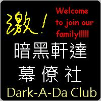

徵求 各界提供背景圖！感謝～獎勵私下公佈( e - mail )
|
重大事件 4： |
2009/06/22 為晉升優良網站，預告：【07/01±365天】本站"maybe"將進行大改版！！！ |
|
重大事件 3： |
2009/05/06 幕僚社樂團"UV"正式成立，主唱大甜、吉他手1阿達、吉他手2杯樂、BASS手阿光、鼓手咻兒、KB手Tony！ |
|
重大事件 2： |
2008/10/22 今日"文書小草"得知又一個新興團體─"傻子幫"出現，幫員裡似乎有我們的叛逃公關以及部分叛逃會員 |
|
重大事件 1： |
2008/10/21 新興勢力"罐子幫"終於危害到我們社團，中心人物"罐子"於今日晚間實習時，大聲的嗆了我們的偉大幕僚社 |
|
最後更新日期：2009/07/02 |
Designed by 宣傳 |
以Firefox 3.0瀏覽器瀏覽呈現最佳效果 立即點此下載